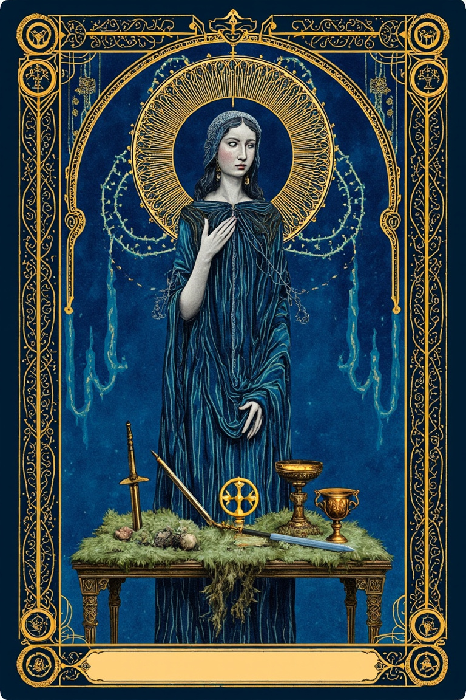
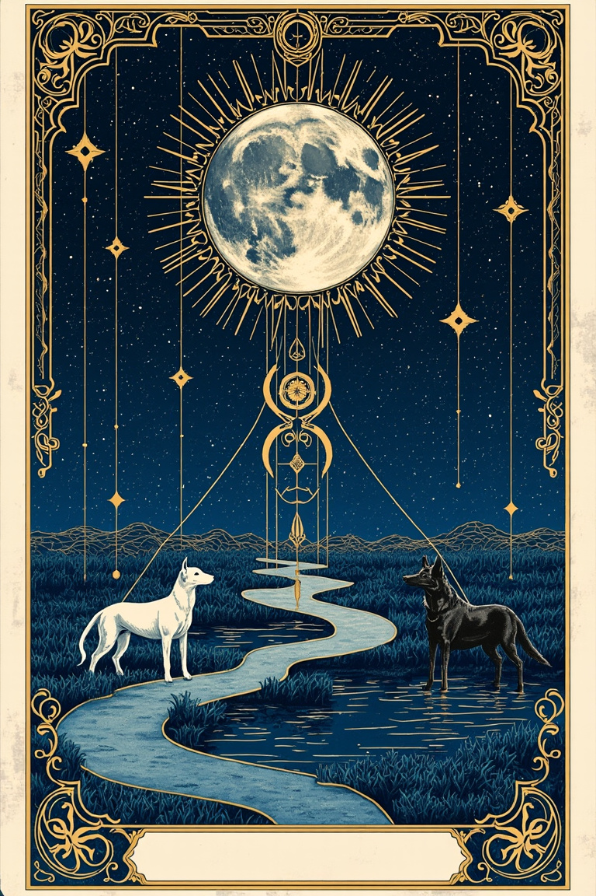
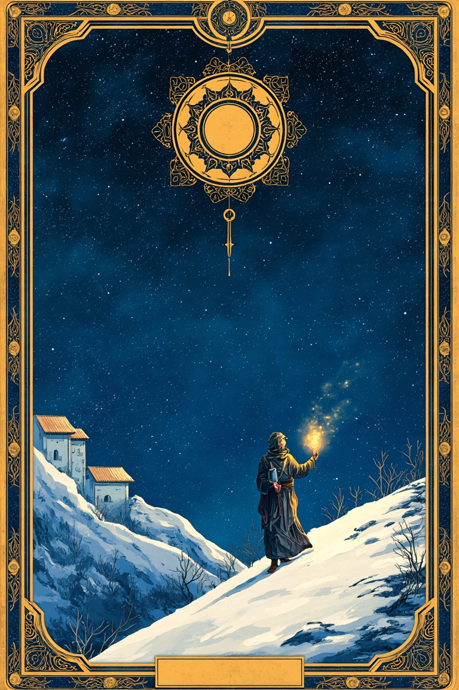

现状
魔术师 · 正位
魔术师 · 正位
你手里已经有可以开始的东西
魔术师首先指向资源的可用性。你现在的困惑未必来自能力不足，更像是已有经验、表达、关系和执行力还没有被放进同一个方向里。
这张牌并不催促你立刻离开。它更关心一个现实问题：如果暂时不改变职位，你是否仍能用现有条件做一次小规模试验，证明自己真正想走的方向？
我是否应该在近期改变工作方向？我想分清真正的准备，和只是想从疲惫里逃开。



魔术师首先指向资源的可用性。你现在的困惑未必来自能力不足，更像是已有经验、表达、关系和执行力还没有被放进同一个方向里。
这张牌并不催促你立刻离开。它更关心一个现实问题：如果暂时不改变职位，你是否仍能用现有条件做一次小规模试验，证明自己真正想走的方向？
月亮逆位常出现在迷雾开始变薄的时候。你可能已经更清楚哪里不适合自己，只是仍担心看错，或者把短期情绪误认为长期答案。
阻力不是你太敏感，而是缺少可以对照的事实。把最消耗你的三件事和最能让你进入专注的三件事分别写下来，它们会比笼统的想换工作更接近问题本身。
隐者给出的不是退缩，而是一段主动降低外界声音的调查期。你需要的可能不是更多行业观点，而是一个不被催促的窗口，去确认自己愿意长期承担哪一种困难。
在作出不可逆决定前，找一位了解目标领域、又不会替你做决定的人谈一次。带着具体问题去，而不是只问我该不该走。
魔术师确认你有行动能力，月亮逆位要求你把情绪中的雾转换成事实，隐者则建议先进行一段安静而具体的验证。真正的变化更像试验、访谈和边界整理。